Library › Topics › Creativity
Everything on creativity
Where ideas come from and how to keep them coming: 30 books on making things, sharing them, and surviving the middle of the work.
30 BOOKS · ALL FREE · AUDIO IN 26 LANGUAGES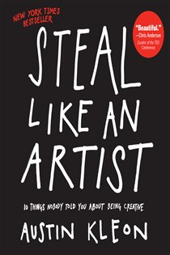
Steal Like an ArtistAustin Kleon · 2012Nothing is original: all creative work builds on what came before. So steal like an artist - with credit, tran8 min · 6 lessons · free summary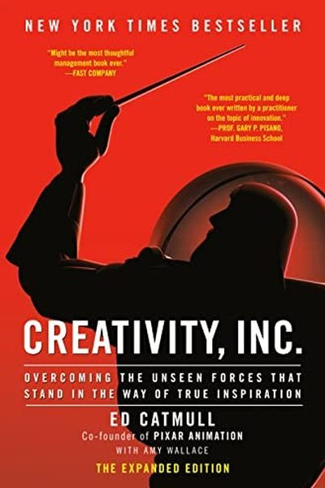
Creativity, Inc.Ed Catmull · 2014A genius is not a lone artist; it's a team culture that protects candor, failure and ugly early drafts.8 min · 6 lessons · free summary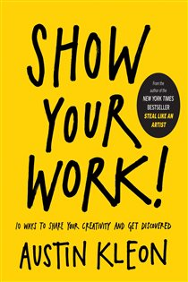
Show Your Work!Austin Kleon · 2014You don't have to be a genius - join a scenius. Share something small every day, and let the work find its aud8 min · 6 lessons · free summary The Art of Creative ThinkingRod Judkins · 2015Creativity isn't a gift - it's a way of operating: embrace uncertainty, mine your failures, and start before y9 min · 7 lessons · free summaryThe Artist's WayJulia Cameron · 1992Creativity is not a mood - it's a practice. Morning Pages and Artist Dates rebuild the creative channel.8 min · 6 lessons · free summary
The Art of Creative ThinkingRod Judkins · 2015Creativity isn't a gift - it's a way of operating: embrace uncertainty, mine your failures, and start before y9 min · 7 lessons · free summaryThe Artist's WayJulia Cameron · 1992Creativity is not a mood - it's a practice. Morning Pages and Artist Dates rebuild the creative channel.8 min · 6 lessons · free summary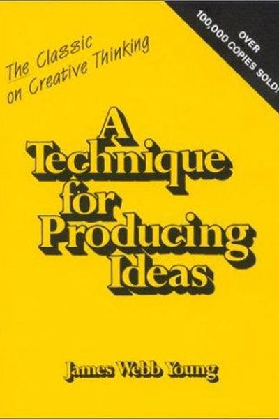
A Technique for Producing IdeasJames Webb Young · 1965Ideas are new combinations of old elements. Here's the exact 5-step machine that produces them on demand.8 min · 6 lessons · free summary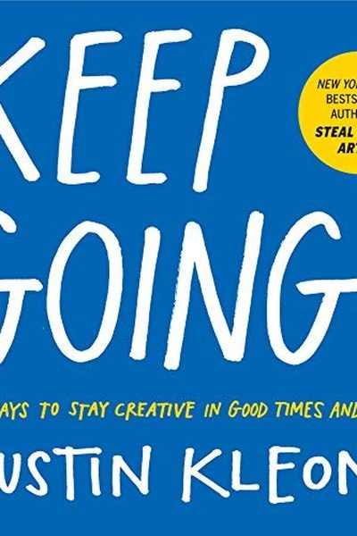
Keep GoingAustin Kleon · 2019Creativity is a marathon disguised as a series of days. Protect your routine, your joy and your attention - an8 min · 6 lessons · free summary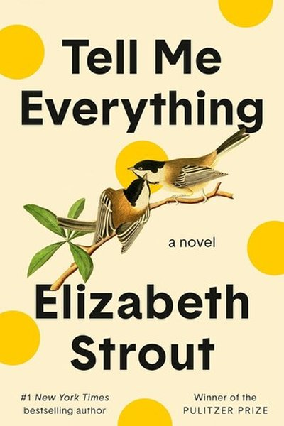
The Creative Act: A Way of BeingRick Rubin · 2023Creativity is not something you make - it is something you receive. Your job is to tune the antenna.8 min · 6 lessons · free summary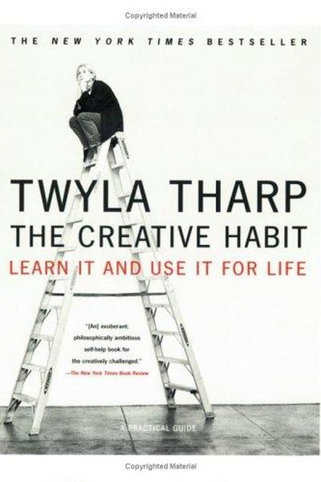
The Creative HabitTwyla Tharp · 2003Creativity is not a bolt of lightning - it's a habit. Show up every day and the lightning finds you.8 min · 6 lessons · free summary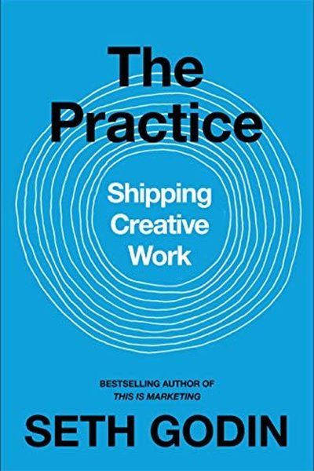
The Practice: Shipping Creative WorkSeth Godin · 2020Stop waiting for inspiration. The practice is showing up, shipping generously, and doing it again tomorrow.8 min · 6 lessons · free summaryBird by BirdAnne Lamott · 1994Write shitty first drafts, take it bird by bird, and remember: perfectionism is the enemy of the people.8 min · 6 lessons · free summaryArt & FearDavid Bayles & Ted Orland · 1994The fears that block your art are ordinary, predictable, and survivable. Make the work anyway.8 min · 6 lessons · free summaryBig MagicElizabeth Gilbert · 2015You don't need suffering to create. Curiosity, courage and finished work beat talent and torture.8 min · 6 lessons · free summaryContagiousJonah Berger · 2013Virality isn't luck - it's engineering: Social currency, Triggers, Emotion, Public, Practical value, Stories. 8 min · 6 lessons · free summaryDo the WorkSteven Pressfield · 2011Resistance is the enemy of every creative act - and the cure is simple: start, continue, and finish. Do the wo8 min · 6 lessons · free summary India in the Age of IdeasSanjeev Sanyal · 2012Sanjeev Sanyal argues that India's fortunes have always followed its ideas and institutions - and that underst8 min · 6 lessons · free summary
India in the Age of IdeasSanjeev Sanyal · 2012Sanjeev Sanyal argues that India's fortunes have always followed its ideas and institutions - and that underst8 min · 6 lessons · free summary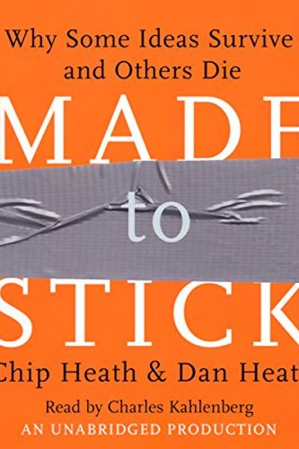
Made to StickChip Heath & Dan Heath · 2007Sticky ideas aren't born, they're built: Simple, Unexpected, Concrete, Credible, Emotional, Stories. And the e8 min · 6 lessons · free summary Right Idea, Wrong DecadeUnknown · 2026A field guide to timing: why great ideas die ahead of their decade, how fast followers inherit the market, and12 min · 11 lessons · free summaryThe Idea of IndiaSunil Khilnani · 1997India's unity is not cultural - it is political: a democracy that turns a billion differences into one continu8 min · 6 lessons · free summary
Right Idea, Wrong DecadeUnknown · 2026A field guide to timing: why great ideas die ahead of their decade, how fast followers inherit the market, and12 min · 11 lessons · free summaryThe Idea of IndiaSunil Khilnani · 1997India's unity is not cultural - it is political: a democracy that turns a billion differences into one continu8 min · 6 lessons · free summary The War of ArtSteven Pressfield · 2002There's a force whose sole mission is to stop you from doing your work. Naming it - Resistance - is half the w8 min · 6 lessons · free summaryWired to CreateScott Barry Kaufman & Carolyn Gregoire · 2015The creative mind isn't a special type - it's a set of habits anyone can train: openness, passion, and a messy8 min · 6 lessons · free summary
The War of ArtSteven Pressfield · 2002There's a force whose sole mission is to stop you from doing your work. Naming it - Resistance - is half the w8 min · 6 lessons · free summaryWired to CreateScott Barry Kaufman & Carolyn Gregoire · 2015The creative mind isn't a special type - it's a set of habits anyone can train: openness, passion, and a messy8 min · 6 lessons · free summary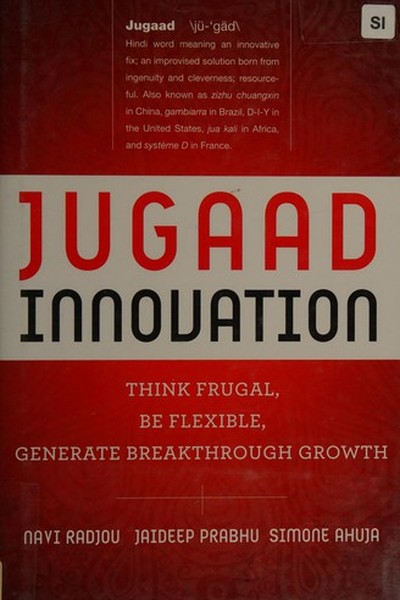
Jugaad InnovationNavi Radjou, Jaideep Prabhu & Simone Ahuja · 2012Radjou, Prabhu and Ahuja show how India's frugal 'jugaad' mindset - constraints as fuel, flexibility over perf8 min · 6 lessons · free summary Lateral ThinkingEdward de Bono · 1970Vertical thinking digs the same hole deeper. Lateral thinking digs a new hole - on purpose.8 min · 6 lessons · free summaryLinchpinSeth Godin · 2010Stop being a cog. Become the linchpin - the indispensable human who brings art, emotion and connection to work8 min · 6 lessons · free summaryOn WritingStephen King · 2000Writing is telepathy: the job is to get what's in your head into the reader's - clearly, honestly, every day.8 min · 6 lessons · free summaryOriginalsAdam Grant · 2016Originality is not a personality - it's a set of habits. And procrastinators, doubters and troublemakers often8 min · 6 lessons · free summaryThe Design of Everyday ThingsDon Norman · 1988Good design is invisible: when affordances, signifiers and feedback align, you just know what to do.8 min · 6 lessons · free summary
Lateral ThinkingEdward de Bono · 1970Vertical thinking digs the same hole deeper. Lateral thinking digs a new hole - on purpose.8 min · 6 lessons · free summaryLinchpinSeth Godin · 2010Stop being a cog. Become the linchpin - the indispensable human who brings art, emotion and connection to work8 min · 6 lessons · free summaryOn WritingStephen King · 2000Writing is telepathy: the job is to get what's in your head into the reader's - clearly, honestly, every day.8 min · 6 lessons · free summaryOriginalsAdam Grant · 2016Originality is not a personality - it's a set of habits. And procrastinators, doubters and troublemakers often8 min · 6 lessons · free summaryThe Design of Everyday ThingsDon Norman · 1988Good design is invisible: when affordances, signifiers and feedback align, you just know what to do.8 min · 6 lessons · free summary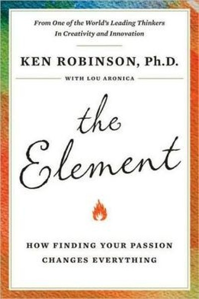
The ElementKen Robinson · 2009Your Element is where natural talent meets personal passion - and the world needs you to find it, not conform.8 min · 6 lessons · free summary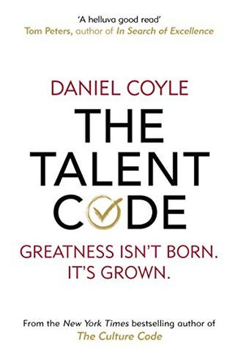
The Talent CodeDaniel Coyle · 2009Talent is a code: deep practice builds myelin, ignition fuels the fire, and master coaching guides the way.8 min · 6 lessons · free summary Turning ProSteven Pressfield · 2012The amateur waits for inspiration and organizes life around fear; the professional shows up daily, plays hurt,7 min · 10 lessons · free summary
Turning ProSteven Pressfield · 2012The amateur waits for inspiration and organizes life around fear; the professional shows up daily, plays hurt,7 min · 10 lessons · free summary📖 OPEN THE FULL LIBRARY, 500 BOOKS
Every summary free. Mark lessons as read, listen in your language, share quote cards.